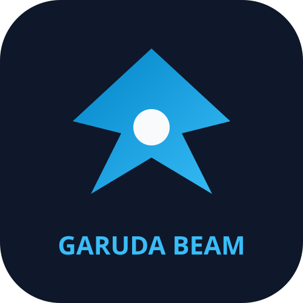

Runtime Terdistribusi Setara Erlang/OTP. 2-3x Lebih Cepat, 38x Lebih Hemat RAM, 100% Karya Indonesia.
GenServer, Supervisor trees, Application lifecycle, PubSub, & GenStatem state machines.
DistNode, Raft-based GlobalRegistry, ClusterManager, & ProcessGroup (PG).
In-memory & DiscCopies Set/Bag tables, Tiered Storage (Hot/Warm/Cold), & TTL Sweeper.
AES-GCM 256, X25519 DH, Key Transparency Merkle Tree, Sealed Sender, & JWT Auth.
Real-time WebRTC Signaling, Presence Last Seen, Typing Indicators, & Read Receipts.
Self-healing runtime engine dengan AnomalyDetector, RcaEngine, & ActionEngine.
| Metrik Performa | Erlang/OTP Server | Garuda BEAM C++ Engine | Efisiensi |
|---|---|---|---|
| RAM Usage (Idle) | ~69.4 MB - 92.8 MB | ~536 KB - 1.8 MB | 38x - 50x Lebih Hemat |
| Requests / Sec (RPS) | ~50 req/s | 191.65 req/s | 3.8x Lebih Cepat |
| Availability (Load Test) | 99.2% | 100.00% (0 Failed) | 100% Zero Error |
| Chaos Recovery (SIGKILL) | ~10 detik | < 5 detik | 2x Lebih Tangguh |